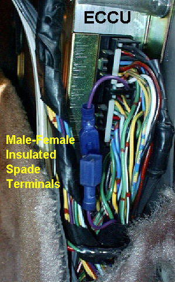
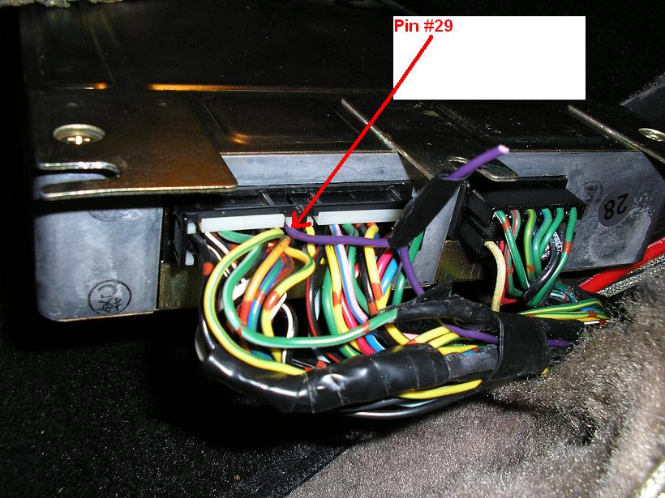

-
Hey guys, I'm new to the forum and relatively new to the whole car tuning scene. I own one of the 50th AE 300z's, and I know the engine is limited to 137. I do also know that it can go a decent amount faster. Is there any way to remove that Gov, or am I stuck with it unless I drop a new motor and tranny?
2001 Mazda Miata LS
also a 1989 Nissan 240SX
50th AE Build Thread SOLD 2015 -
its an electronic gov, you wouldn't never be required to change the engine or transmission to bypass it. -
gotcha. So what would be required to remove it?
2001 Mazda Miata LS
also a 1989 Nissan 240SX
50th AE Build Thread SOLD 2015 -
Cut the purple wire…85 Z31 6.0 LSX turbo 766whp/792wtq
04 GTO, LS6, big cam, porting, N20… underway for summertime daily driver. -
Yep it's that simple, but as you are new to the car scene and assuming the suspension is stock, why would you need to exceed 137? At that point it seems like just a bad idea.SATAN wrote: Cut the purple wire… -
It seems I can never remember the difference between RPM and SPEED
and the dang pictures are on my site,

 -
I've been going 137 on a freeway in the middle of BFE with a friend in an LS1 swapped Z28, and he pulled away cause i was getting stopped at 137. i wont be going over 137 much, but I would like to have it unrestricted just in case. And i'm running with the MacPherson struts, so it should be able to hold fine for short amounts of time at a higher speed
2001 Mazda Miata LS
also a 1989 Nissan 240SX
50th AE Build Thread SOLD 2015 -
Feel free to kill yourself by exceeding the safety limits in a car with worn suspension. It would be a shame to wreck a good AE though.
1988 300ZX Turbo, Shiro Special #760
1988 300ZX Turbo Automatic (wife's car)
1991 Hard-body 2WD
http://zccw.org/zccw/?page_id=1215 -
Didn't ask you to be a dick about it, I was just curious in how to do it
2001 Mazda Miata LS
also a 1989 Nissan 240SX
50th AE Build Thread SOLD 2015 -
I'll just say that make sure your suspension is at least up to stock specs, in stock form the Z31 can do 137 easily enough but with a little wear it can start to get unstable. Exceeding 137 it will become more noticeable so as you look into upgrades I'd start there. I'm not a fan of MacPherson, struts, I think they are acceptable for daily driving but mainly intended to save space and cost. If I wanted to street race I'd find a turbo Z that's not a limited production, but ultimately it's your car so I'll make any suggestions I can to maybe prevent that from happening while you do what you decide to do. -
Thanks man, i'm still figuring out what i want to do to the car exactly.
2001 Mazda Miata LS
also a 1989 Nissan 240SX
50th AE Build Thread SOLD 2015 -
since I have a general idea of what your uses are, what do you have done now? There are a few members that street race that may be able to help. -
Wait, your saying an LS1 Camaro was pulling on you because you still have the speed limiter? LOL
You should probably leave the speed limiter in place.
Cut the purple wire, and put it on a switch. Preferably the horn button on your steering wheel. Dont forget to scream NAWWWWZZZZZ when you push it.The bullshit stops, when the GREEN light drops.
Only babies cry about the bottle. -
I did 145 on a stock NA suspension with worn front struts…wasnt fun at all. Did 140 on Bilsteins with stock NA springs, it felt fairly stable, havent gone fast with the Z3Rs but the car feels better a lot speeds no doubt.- VG30DET (HE341) 86 300ZX - 1982 280ZX Turbo - Headered NA 1986 300ZX 2+2 - 2000 Xterra - -
I have a cold air thrown on, magnaflow catback exhaust, and im getting a bov on right now. Since not many companies make parts for these cars anymore, i'm still lost and not exactly sure on what to do with the car. I do want to get some lowering springs and more suspension work done first because it is a 27 year old car
2001 Mazda Miata LS
also a 1989 Nissan 240SX
50th AE Build Thread SOLD 2015

Copyright © 2006–. All rights reserved. Privacy Policy